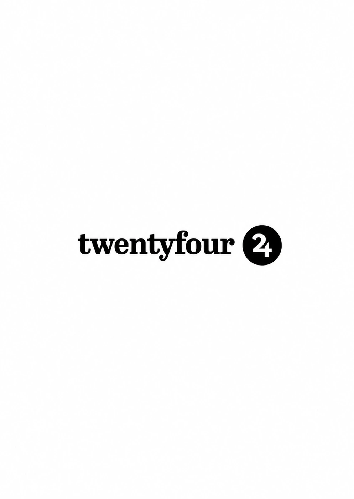

PROJECT 04 — INTEGRATION & AUTOMATION
Basecamp Response Monitor.
Helping teams respond to customer messages before they get missed.
At TwentyFour, I led the development of a Basecamp monitoring application. It detects unanswered customer messages and alerts the team through Slack.


TWENTYFOUR · CUSTOMER SERVICE AUTOMATION
UrgencyBot.
My Basecamp-to-Slack response monitor. Built to identify unanswered customer messages and make follow-up easier across multiple projects.
THE PROJECT
Understand the challenge.
A team supporting many Basecamp projects can miss customer messages. I designed UrgencyBot to monitor conversations and identify unanswered requests. It notifies the team through Slack, grouped by project and customer, so the right message receives attention.
A useful, event-driven connection between customer messages and internal team alerts.
HOW I APPROACHED IT
From idea to execution.
- 01
Identify unanswered messages
Monitored Basecamp messages across multiple client projects and identified conversations needing a response.
- 02
Send useful Slack alerts
Connected Basecamp and Slack using REST APIs and webhooks. Alerts were organized by project and customer for quick follow-up.
- 03
Build and deliver the application
Led frontend and backend work using Node.js and an event-driven microservice approach. Used token authentication, two-factor authentication, CI/CD and weekly Scrum increments.
TOOLS & TECHNOLOGIES
- Node.js
- TypeScript
- Slack Bolt
- REST APIs
- Webhooks
- MongoDB
- Docker
- Bitbucket
- CI/CD
Two Scrum sprints.
Analysed the business needs, designed the application, started frontend and backend work, and created Slack webhooks. Delivered working weekly increments.
Completed the interface and backend, integrated the required features, and prepared a working customer-response monitoring system.
WHAT IT SHOWS
What the work delivered.
I delivered a functional system by January 15, 2024, following two Scrum sprints. The project combined Basecamp monitoring, Slack notifications and secure, event-driven backend integration. It was built to reduce missed customer messages and help TwentyFour follow up faster.
UrgencyBot is the project's original application name. Its development timeline, original screenshot and technical approach come from the WordPress case study.
CONTINUE EXPLORING
Explore the work.
Explore other case studies in my portfolio.
BACK TO ALL SIX PROJECTS